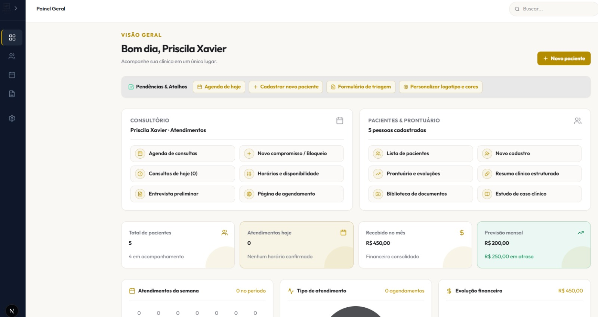
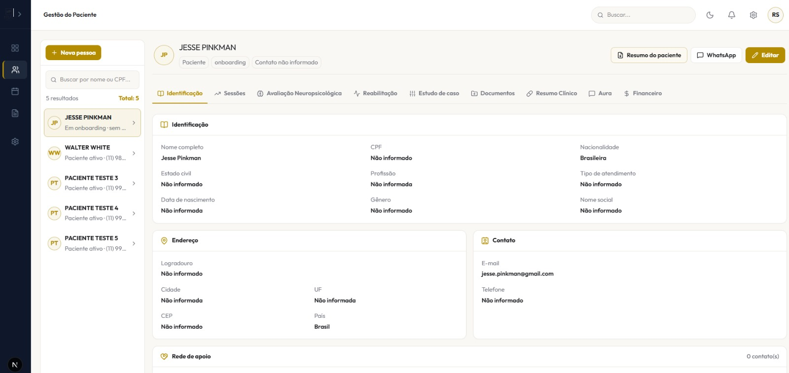
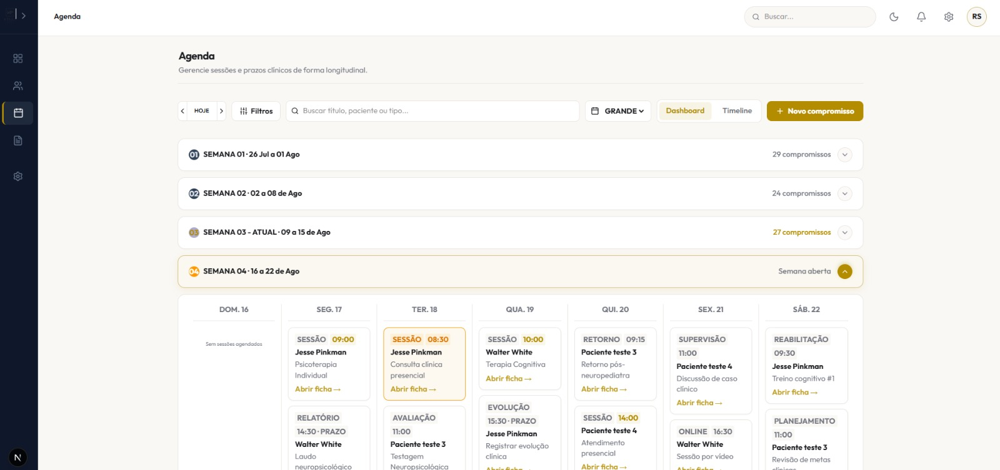
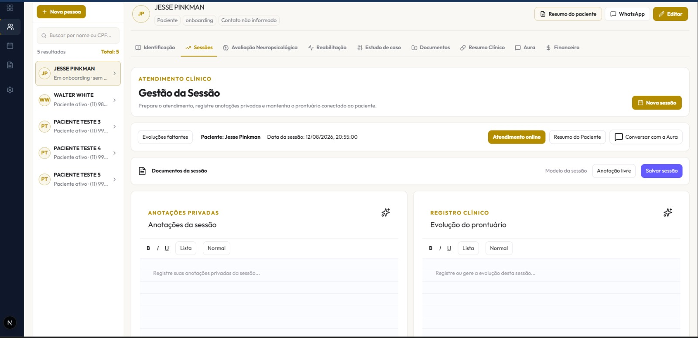
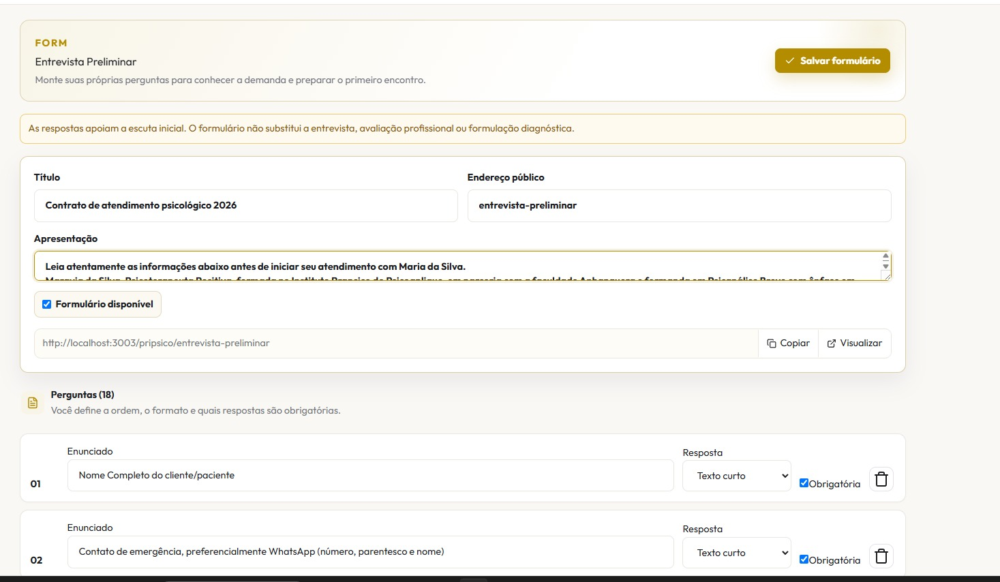
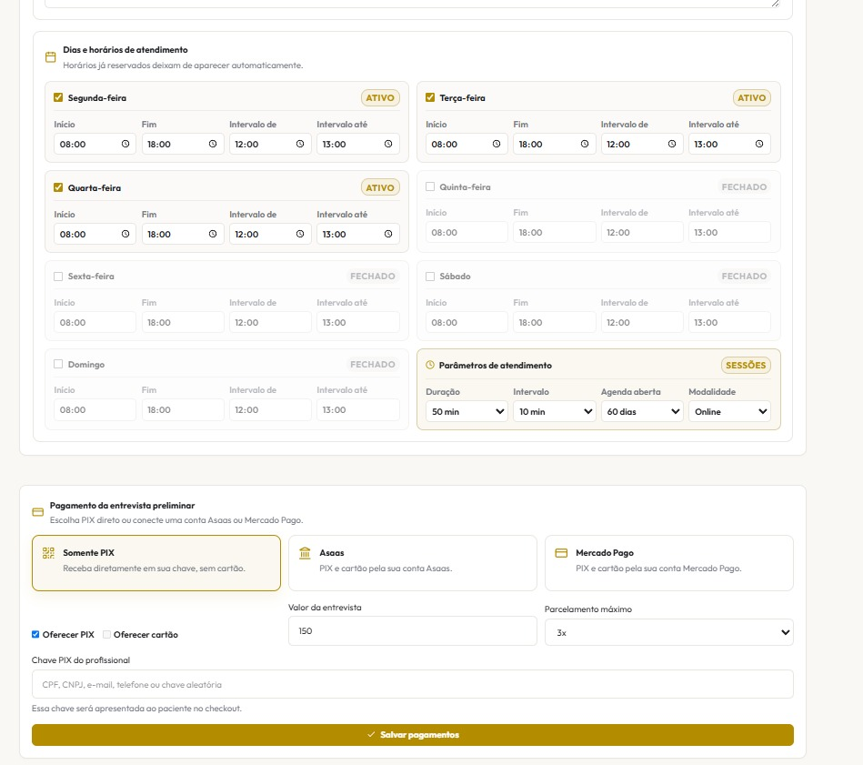
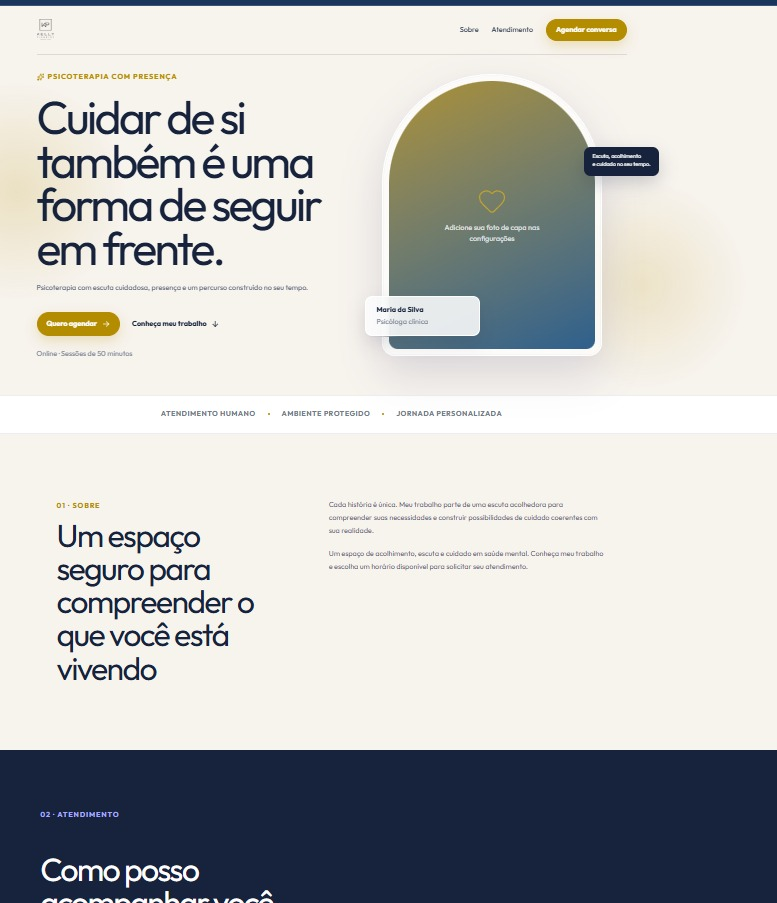

Mais clareza para cuidar. Mais tempo para estar presente.
IA Clínica • Prontuário Longitudinal • Agenda Semanal • Financeiro & PIX • Videochamada Integrada por Sessão • Construtor de Triagem • Site Profissional
Chamada de Vídeo Integrada por Sessão Clínica
Elimine a troca constante entre Zoom, Google Meet e bloco de notas. Seu atendimento online agora acontece dentro da própria ficha do paciente, com sala segura, anotações simultâneas e copiloto de transcrição inteligente.
1-Clique por Sessão
O paciente recebe um link único por WhatsApp ou e-mail e entra direto pelo navegador do celular ou PC. Zero necessidade de instalar apps ou criar logins.
Sigilo & Privacidade Total
A transmissão de áudio e vídeo é direta e confidencial. O encontro permanece estritamente protegido entre você e seu paciente.
Anotações em Tempo Real
Escreva observações clínicas ao lado do vídeo sem perder o contato visual com o paciente nem ter de abrir outra janela.
Evolução Imediata
Ao finalizar o atendimento, os apontamentos da consulta são transformados em proposta de evolução de prontuário pronta para sua revisão.
Conheça as Telas do DeePsistem em Ação
Interface limpa, moderna e pensada exclusivamente para a prática clínica e gestão da saúde mental. Veja como cada módulo se conecta perfeitamente.

Painel Geral & Visão da Clínica
Uma visão panorâmica e acolhedora de toda a sua rotina logo ao iniciar o dia. Sem poluição visual, você tem controle total sobre compromissos, pacientes ativos e finanças.
- Consultório & Agenda: Acesso rápido aos atendimentos do dia e horários disponíveis.
- Pacientes & Prontuário: Resumos clínicos estruturados e estudos de caso em um clique.
- Métricas em Tempo Real: Total de pacientes, faturamento consolidado e previsão mensal.

Gestão Longitudinal do Paciente
Centralize toda a trajetória terapêutica. Desde a identificação inicial e anamnese até sessões, reabilitação neuropsicológica, documentos e financeiro.
- Abas Clínicas Dedicadas: Identificação, Sessões, Neuropsicologia, Reabilitação e Estudo de Caso.
- Resumo do Paciente em PDF: Geração de laudos e sínteses com layout profissional.
- Botão Direto de WhatsApp: Comunicação ética e rápida para confirmação de consultas.

Agenda Clínica Longitudinal
Gerencie atendimentos, prazos de evolução e laudos de forma contínua em formato semanal e timeline organizada.
- Diferenciação por Modalidade: Sessão Presencial, Online por Vídeo, Avaliação e Supervisão.
- Alertas de Prazos: Lembretes automáticos para registro de evolução pendente.
- Sincronização com Paciente: Horários abertos para agendamento online automático.

Gestão da Sessão & Videochamada
O centro nevrálgico do seu atendimento. Botão dourado de Atendimento Online, anotações privadas divididas na tela e evolução imediata conectada à Aura.
- Atendimento Online Nativo: Inicie a teleconsulta sem links de terceiros.
- Anotações Privadas Simultâneas: Editor rico para apontamentos durante o encontro.
- Conversar com a Aura: Ajuda de IA para sintetizar ideias e hipóteses diagnósticas.

Construtor de Triagem & Contratos
Crie seus próprios formulários de entrevista preliminar, anamnese e termos de atendimento com link público exclusivo para o paciente preencher antes do primeiro encontro.
- Perguntas Customizadas: Texto curto, longo, múltipla escolha e obrigatórias.
- Contrato Digital Integrado: Apresentação clara de termos e honorários.
- Preenchimento pelo Celular: Link responsivo direto para envio no WhatsApp.
Identidade Profissional & Marca
O sistema é seu. Aplique o logotipo da sua clínica, personalize a cor principal e secundária e entregue uma experiência visual impecável para seus pacientes.
- Upload de Logo: Sua marca no cabeçalho, relatórios e página pública.
- Paleta Customizada: Cores que respeitam sua identidade visual existente.
- Pré-visualização Instantânea: Veja como o paciente enxerga seu consultório.

Parâmetros de Agenda & Pagamentos
Defina dias e horários de atendimento, tempo de sessão, intervalos e receba pagamentos com segurança diretamente via chave PIX, Asaas ou Mercado Pago.
- Grade Horária Flexível: Defina dias ativos, horários e pausas de almoço.
- Pagamento na Entrevista: Cobrança opcional no momento do agendamento inicial.
- Múltiplos Meios: PIX Direto em sua chave ou Cartão de Crédito parcelado.

Landing Page Pública do Consultório
Ganhe uma página moderna e profissional pronta para receber pacientes. Com design elegante, depoimentos, apresentação acolhedora e botão de agendamento online.
- Design Editorial Premium: Transmita seriedade, acolhimento e autoridade.
- Agendamento em 3 Passos: Escolha do horário, dados e confirmação rápida.
- Endereço Personalizado: Seu link exclusivo pronto para a bio do Instagram.
Cada etapa continua ligada ao paciente.
O DeePsistem aproxima todas as etapas do consultório para reduzir trocas de ferramentas e eliminar perda de contexto clínico.
Antes da sessão
Agenda aberta, triagem inicial e contexto clínico prévio organizados para você preparar o atendimento.
Durante o encontro
Videochamada nativa por sessão, anotações simultâneas e suporte de áudio consentido com a Aura no mesmo fluxo.
Depois da sessão
Evoluções e formulações de caso estruturadas para sua leitura, revisão e validação profissional imediata.
Entre atendimentos
Metas terapêuticas, reabilitação neuropsicológica e acompanhamento longitudinal da evolução.
Na gestão
Cobrança de honorários, controle de PIX e relatórios administrativos sem burocracia desnecessária.
"Organizo o histórico longitudinal e elaboro uma síntese técnica revisável. Você interpreta, valida e toma a decisão clínica."
A Aura organiza.
Você conduz.
Áudio autorizado, notas e histórico apoiam a formulação clínica. Nada substitui sua presença, seu julgamento técnico ou seu vínculo com o paciente.
- Consentimento obrigatório e explícito antes de qualquer gravação.
- Conteúdo de prontuário 100% editável e revisável pelo profissional.
- A decisão diagnóstica e de conduta terapêutica permanece puramente humana.
Dados clínicos exigem cuidado em cada camada.
O DeePsistem foi concebido sob princípios rigorosos de isolamento por profissional, confidencialidade no transporte de mídia e menor exposição dos registros clínicos.
Controle de sessões com tokens criptografados e proteção contra acessos indevidos.
As videochamadas ocorrem em ambiente protegido e confidencial, sem gravação ou armazenamento indevido de vídeo.
Nenhuma anotação de IA se torna prontuário oficial sem sua confirmação explícita.
Desenvolvido em alinhamento com as diretrizes do Conselho Federal de Psicologia.
Perguntas Comuns
Cada sessão agendada no DeePsistem possui um link individual e confidencial para o atendimento online. O paciente entra com apenas 1 clique direto pelo navegador (celular ou computador), sem precisar instalar aplicativos externos. Ao mesmo tempo, você anota a evolução clínica na mesma tela com suporte da Aura.
Não. O acesso para o paciente é 100% direto via navegador (Chrome, Safari, Edge, Firefox no celular ou computador). O paciente só precisa clicar no link enviado por WhatsApp ou e-mail.
Você pode fazer o upload do seu logotipo e escolher as cores principais e secundárias da sua clínica. Essas personalizações são refletidas no seu painel, na página pública de agendamento dos pacientes e nos resumos clínicos gerados em PDF.
Sim. O DeePsistem foi estruturado com consentimento explícito para transcrição, criptografia de ponta a ponta na conexão de vídeo, isolamento de dados entre profissionais e obrigatoriedade de revisão humana de todas as evoluções clínicas geradas.
Menos ruído na rotina.
Mais presença no cuidado.
Comece pela agenda, centralize a ficha do paciente e experimente a nova videochamada nativa por sessão com assistência clínica inteligente.